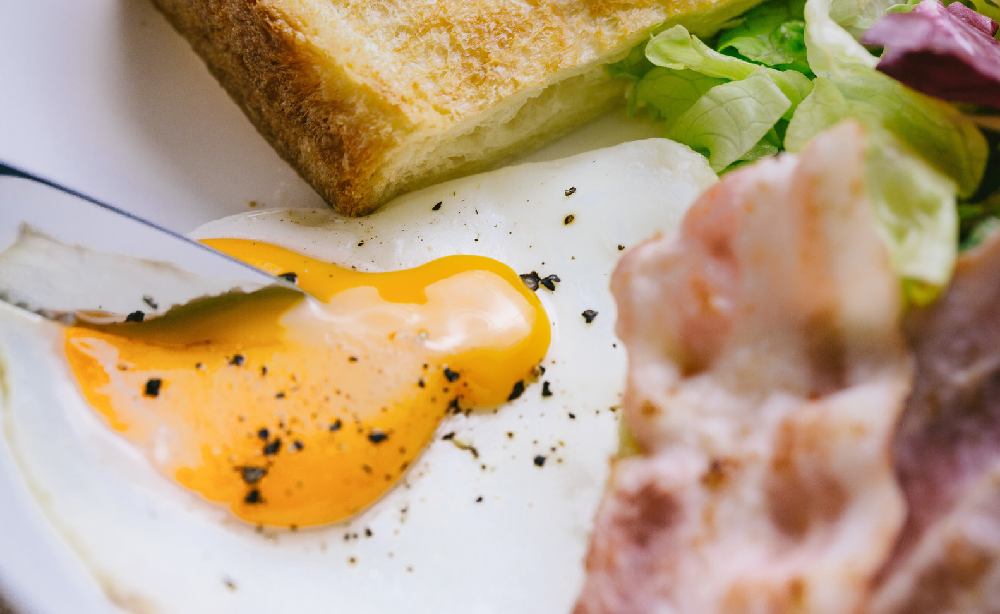

お得に買い物をしたいお客さん

利益を出すためには廃棄をなるべく減らしたいスーパーマーケットやコンビニエンスストア
まだ食べることができるのに捨てられている食品がたくさんあります世界で作られている食べ物のうち3/1は捨てられていて、日本でも642万トン捨てられています
2019年に「食品ロス削減推進法」が成立しました
「TSUNAGO」を使って、私たちも身近なところからもったいないをなくしていきましょう